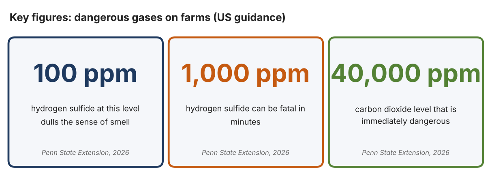
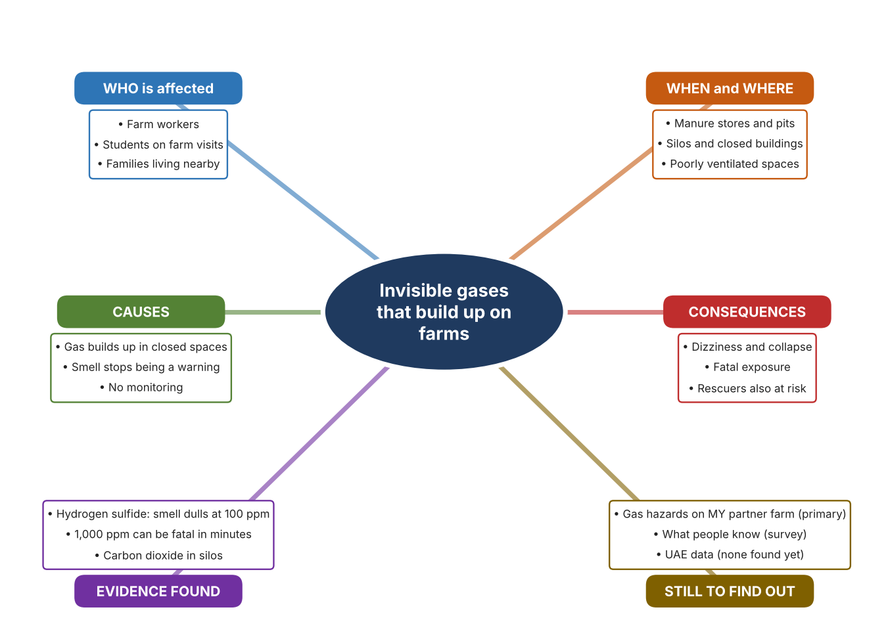
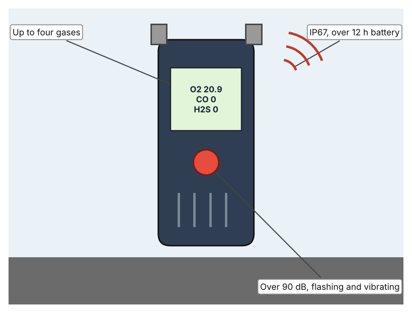
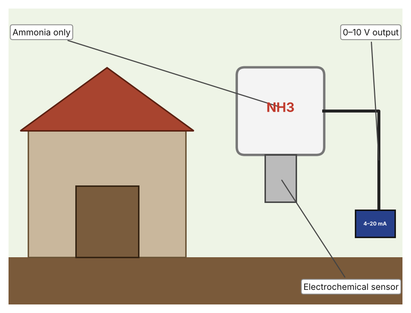
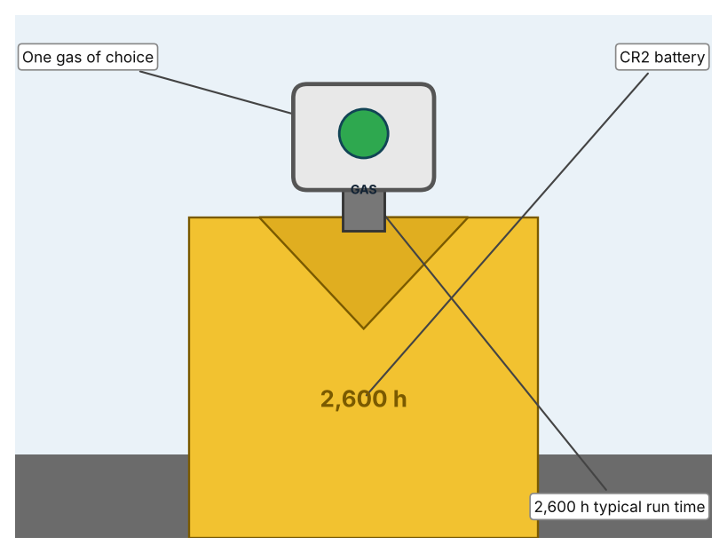

A1 · Design need
Identify and explain the problem faced by your client and community.
My client is the Science Department of a Dubai school, represented by the Head of Science, which arranges visits to a local farm and runs a school growing project. The department wants students and farm workers to be safe from gases that cannot be seen. It needs dangerous gases to be detected early in places where they can build up, so that people can leave before they are harmed.
The people most affected are farm workers, because they spend time in places such as stores, pits and closed buildings. Students on visits are a second group, because they may not know the dangers. Families who live nearby are a third group, because a gas can spread beyond the building where it forms.
The need is real because some farm gases are dangerous at low levels and cannot be relied on to warn people. Penn State Extension explains that hydrogen sulfide from manure smells like rotten eggs but dulls the sense of smell from about 100 parts per million, and that 1,000 parts per million can be fatal in minutes, while carbon dioxide above 40,000 parts per million is immediately dangerous (Darlington and Becot). The article describes American livestock and silo farms, and its text and table disagree about ammonia, so I do not use its ammonia figure. I did not find a UAE source on farm gases, so I need to find out about my own partner farm.
Figure 1 summarises the key numbers. They are guidance from the US, so I treat them as a pattern and not as proof about UAE farms. In my own words: a gas that dulls the sense of smell is more dangerous than one that always smells, because people think the danger has gone. Figure 2 is my mind map of the problem.
300 words


A2 · Research plan
Six research questions of different types, each with a priority, a research type and evidence.
| # | Question | Priority | Primary / secondary | Evidence | Brief answer |
|---|---|---|---|---|---|
| 1 | Factual: Which gases are dangerous on farms, and at what levels? | High | Secondary | Penn State Extension, 18 Feb. 2026 (Appendix A, Source 1) | Silos: carbon dioxide, nitrogen dioxide, methane; manure: hydrogen sulfide (smell dulls from 100 ppm, 1,000 ppm fatal in minutes); carbon dioxide above 40,000 ppm is immediately dangerous; engine exhaust: carbon monoxide. |
| 2 | Factual: Where on a farm do these gases build up? | High | Secondary | Penn State Extension, 2026 (Appendix A, Source 1) | Manure storage and pits, silos and closed buildings with engines or heaters. |
| 3 | Conceptual: How can a gas be detected, and how can a person be warned? | Medium | Secondary | Dräger X-am page (Source 2); Polytron page (Source 3); Industrial Scientific page (Source 4) | Electrochemical and other sensors react to a gas; the result is shown on a display or sent as a voltage; alarms may be audible, visual or vibrating. |
| 4 | Debatable: Should a farm use a portable multi-gas monitor, a fixed single-gas detector, or a personal single-gas badge? | Medium | Secondary | Appendix A, Sources 2, 3 and 4 | A portable multi-gas monitor covers several hazards; a fixed detector watches one place all day; a badge follows one person but covers one gas. My view: the right choice depends on where people work. |
| 5 | Debatable (challenges my assumption, UAE source): Dangerous gas on farms is a problem for cold-climate livestock farms, so it is not relevant to UAE farms. | High | Secondary | Penn State Extension, 2026 (Source 1); no UAE source found | The guidance describes American farms and I found no UAE source. Closed buildings, stores and engines exist on any farm, so the hazards could apply, but my partner farm check must show whether they do. |
| 6 | Factual (primary): What gas hazards exist on our partner farm or in school growing spaces, and what do students and workers know? | High | Primary | Own hazard checklist and survey (Appendix A, Sources 5 and 6) | [Student data needed: write the checklist results (with permission) and survey averages, then two sentences on the pattern you see.] |
A3 · Existing products
Three significantly different products, each analysed with ACCESS FM, with pros and cons.
Product 1: Portable multi-gas monitor (Dräger X-am 2500)

Illustration by the author based on the X-am 2500 listing, Rockall Safety (Appendix A, Source 2). [Student: replace with a photo from the source, cited MLA 9]
Product 2: Fixed ammonia detector (Dräger Polytron C300)

Illustration by the author based on the Polytron C300 listing, Lavastica (Appendix A, Source 3). [Student: replace with a photo from the source, cited MLA 9]
Product 3: Personal single-gas badge (Industrial Scientific GasBadge Pro)

Illustration by the author based on the GasBadge Pro page, Industrial Scientific (Appendix A, Source 4). [Student: replace with a photo from the source, cited MLA 9]
ACCESS FM analysis
| ACCESS FM | Product 1 | Product 2 | Product 3 |
|---|---|---|---|
| Aesthetics | Compact handheld unit; look not described. | Fixed transmitter; look not described. | Small badge worn on clothing; look not described. |
| Cost | Price not listed. | Price shown only after login. | Price on request. |
| Customer | Workers entering stores, pits or closed spaces. | Farms that want one place watched all day. | Individual workers. |
| Environment | Battery lasts over 12 hours. | Power requirement not stated. | Replaceable CR2 3 V lithium battery. |
| Size | 4.8 × 13.0 × 4.4 cm; 220–250 g. | Size not stated. | Size not listed. |
| Safety | IP67; visual, audible (over 90 dB at 30 cm) and vibrating alarms. | Alarms and rating not stated. | Alarm types and rating not listed; lifetime warranty. |
| Function | Detects up to four gases: combustible, oxygen, carbon monoxide and hydrogen sulfide. | Detects ammonia only. | Detects one gas; O2, CO, H2S, NH3 and NO2 versions exist. |
| Materials | Materials are not stated. | Materials are not stated. | Materials are not stated. |
Pros and cons
| Product 1 | Product 2 | Product 3 | |
|---|---|---|---|
| Pro | Covers several hazards in one device and warns three ways. | Watches one place continuously without a person. | Light and worn by the person at risk. |
| Con | Price not listed and the person must carry it. | Covers one gas only and the price is hidden. | Covers one gas only, and alarm details are not listed. |
A4 · Design brief
Restate the need, summarise the research and the existing products, and state the design intent.
My client, the Science Department of a Dubai school, needs dangerous gases to be detected early in places where they can build up, so that people can leave before they are harmed. The problem is real: hydrogen sulfide dulls the sense of smell from about 100 parts per million and 1,000 parts per million can be fatal in minutes (Appendix A, Source 1). Carbon dioxide above 40,000 parts per million is immediately dangerous (Appendix A, Source 1).
My research shows that some farm gases cannot be trusted to warn people by smell, and that they collect in closed spaces (Appendix A, Source 1). The guidance is from the US and I found no UAE source, so I need my own evidence. My debatable questions led me to decide that portable, fixed and personal detectors each cover only part of the problem, and my challenged assumption (that gas hazards are only a cold-climate problem) showed me that the hazards may apply to any farm with closed spaces. I will gather my own evidence with a hazard checklist and a survey, always with permission (Appendix A, Sources 5 and 6).
I analysed three very different existing solutions. A portable multi-gas monitor detects up to four gases and warns with sound, light and vibration, but its price is not listed (Appendix A, Source 2). A fixed ammonia detector watches one place continuously, but it covers one gas and its price is hidden (Appendix A, Source 3). A personal badge is worn by the person at risk and runs for about 2,600 hours, but it covers one gas and its alarm details are not listed (Appendix A, Source 4). They give me three ideas for inspiration: carrying a detector, fixing it in place, and wearing it. Each has a weakness that another covers.
My design intent is therefore to create a solution that senses a dangerous gas and warns people clearly in time to leave. It must be affordable, easy to understand, durable in dusty and humid places, and reliable. I have deliberately not fixed what form it will take. That decision will be made in Criterion B, after I analyse my own checklist and survey against the evidence in Appendix A.
368 words
Appendix A · Research notes and sources
Secondary sources in MLA 9, with notes and where each source is used.
| # | Source (MLA 9) | Key notes | Used in |
|---|---|---|---|
| 1 | Darlington, Justin, and Florence Becot. “Identifying and Limiting Dangerous Gases on the Farm.” Penn State Extension, updated 18 Feb. 2026, extension.psu.edu/identifying-and-limiting-dangerous-gases-on-the-farm. Accessed 21 Oct. 2026. | Silo gases (CO2, NO2, methane); manure gas H2S (smell dulls from 100 ppm; 1,000 ppm fatal in minutes); CO2 over 40,000 ppm immediately dangerous; engine exhaust CO. US source, not UAE. Its ammonia text and table disagree, so I do not use the ammonia figure. | A1; A2 Q1, Q2 and Q5; A4. |
| 2 | “Dräger X-am 2500 Multi-Gas Detector.” Rockall Safety, www.rockallsafety.co.uk/product/drager-x-am-2500-multi-gas-detector/. Accessed 21 Oct. 2026. | Up to four gases (combustible, O2, CO, H2S); battery over 12 hours; alarms visual (360°), audible over 90 dB at 30 cm, vibrating; IP67; 4.8 × 13.0 × 4.4 cm; 220–250 g; price not listed. A UK retailer listing. | A2 Q3 and Q4; A3 Product 1; A4. |
| 3 | “Dräger Polytron C300 Gas Detector.” Lavastica, www.lavastica.com/fire-gas/gas-detection/Drager-Polytron-C300/. Accessed 21 Oct. 2026. | Ammonia only (electrochemical sensor); 0–10 V output (4–20 mA optional); range, power, IP rating and size not stated; price shown after login. A retailer listing. | A2 Q3 and Q4; A3 Product 2; A4. |
| 4 | “GasBadge Pro Single-Gas Monitor.” Industrial Scientific, indsci.com/en/gas-detectors/single/gasbadge-pro. Accessed 21 Oct. 2026. | Single gas (O2, CO, H2S, NH3, NO2 and others); typical run time 2,600 hours; CR2 3 V lithium battery; guaranteed for life; alarms, IP rating and size not listed; price on request. | A2 Q3 and Q4; A3 Product 3; A4. |
| 5 | Primary: farm gas hazard checklist, completed by the student on [date]. Accessed own data. | [Student: summarise your counts.] | A2 primary question; A4. |
| 6 | Primary: survey of [number] people, completed on [date]. | [Student: summarise your averages.] | A2 primary question; A4. |
Primary research instrument 1: farm gas hazard checklist
Student completes the checklist with the teacher or farm supervisor present, never enters a pit, silo or closed store, and never tests a gas.
| Place | Closed or poorly ventilated (Y/N) | Gas source (manure, engine, heater, other) | Warning sign present (Y/N) | Detector present (Y/N) | Notes |
|---|---|---|---|---|---|
| Manure store or pit | |||||
| Closed feed store | |||||
| Building with engine or heater | |||||
| Greenhouse or shed |
Primary research instrument 2: survey
Rate each statement from 1 (strongly disagree) to 5 (strongly agree). Collect responses with permission and record no names.
| Statement | 1 | 2 | 3 | 4 | 5 | Total responses |
|---|---|---|---|---|---|---|
| I know which gases can be dangerous on a farm. | ||||||
| I would notice a dangerous gas by smell. | ||||||
| Farm buildings I have seen are well ventilated. | ||||||
| I would feel safer with a gas alarm. |